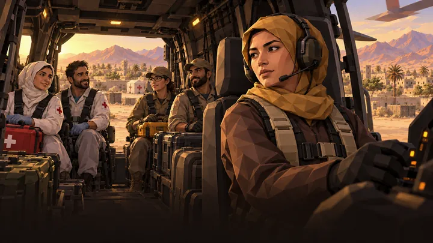
Chapter 01
First Response
Survive the coordinated attack, reopen an abandoned forward post and build a command from scattered survivors.
- First Contact
- Establish the Base
- Radar Warning
- Airlift
- Breach Assault
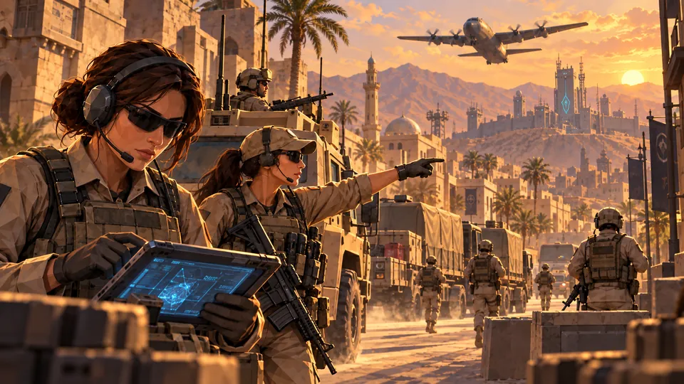
Mobile 3D real-time strategy
Coordinated attacks have cut the city's chain of command. With ARIA, a damaged AI from a long-buried network, you lead the Joint Response Command to protect civilians, rebuild the city's lifelines and find out who planned the blackout.
Commander, people are waiting for an order.
Prologue
Sahrin, the regional capital of the Republic of Daryat, was finally rebuilding after the border war. Then, in a single morning, the city's command network went dark.
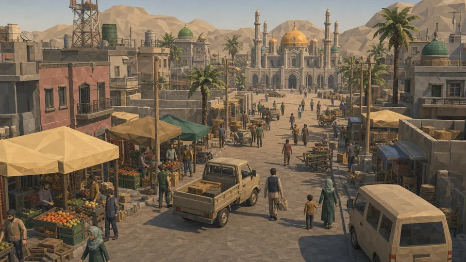
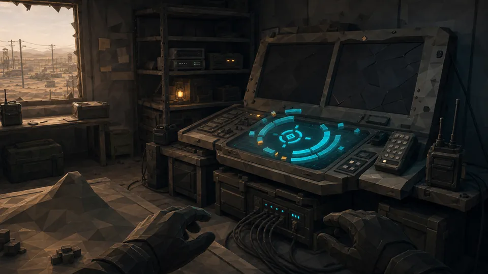
Signal lost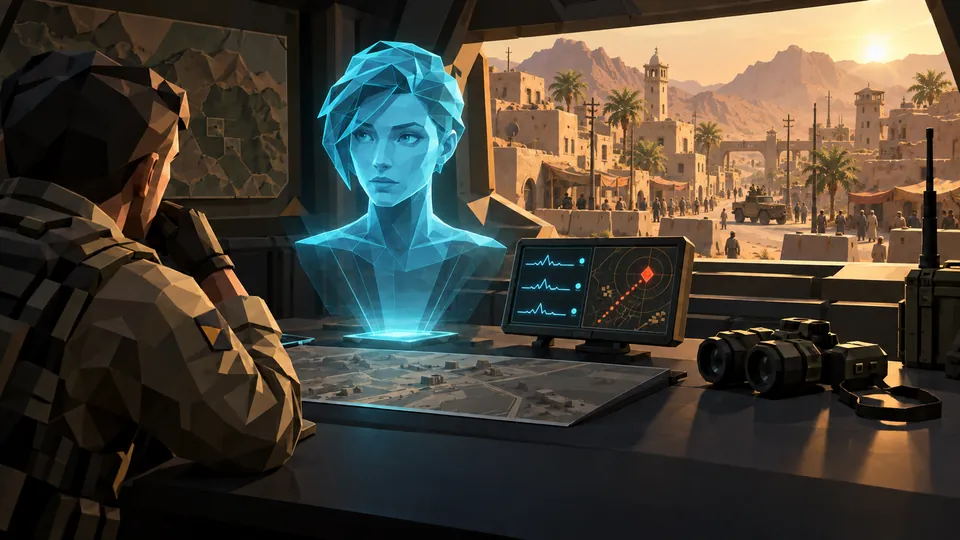
ARIAOne valid continuity officer located. Confirmation required.
YouConfirm.
ARIAIdentity accepted. Commander, people are waiting for an order.
Who is using ARIA's dead credentials, and what are they trying to wake beneath the city?
Campaign: Shattered Relay
Every mission stops one immediate threat and uncovers another part of the conspiracy. The story unfolds through illustrated comic cutscenes between missions, fully voiced in English and Persian.

Chapter 01
Survive the coordinated attack, reopen an abandoned forward post and build a command from scattered survivors.
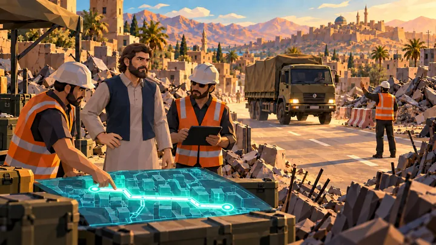
Chapter 02
Restore roads, oil, fuel and power while the enemy reroutes the city's lifelines toward something hidden.
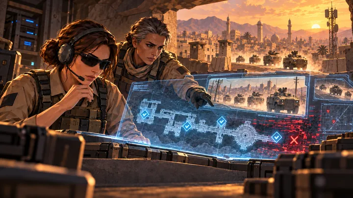
Chapter 03
Separate real threats from planted evidence. Scan, confirm and strike without treating the city as the enemy.
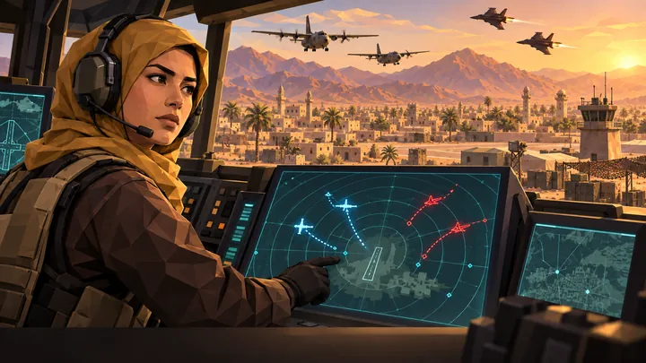
Chapter 04
A proxy army arrives with tanks, aircraft and long-range launchers. Hold the skies and break the armored push.
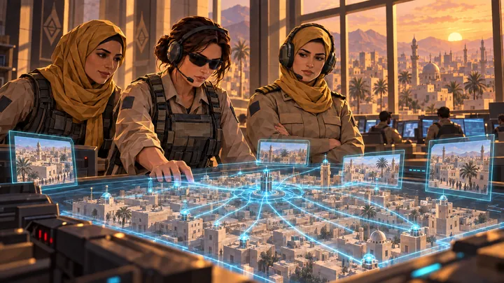
Chapter 05
Every system and every ally comes together for the final assault, and you decide what command should become.
Game modes
All three modes are played on the same detailed 3D city, with soldiers, civilians, vehicles, aircraft and buildings on one map.
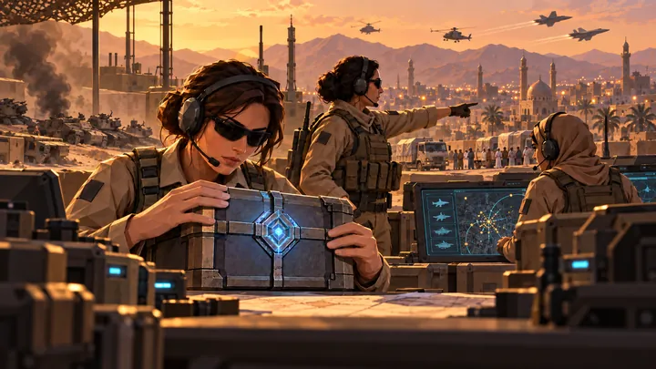
25 missions
The story of Shattered Relay. Short, carefully designed missions introduce new tools, combine them and then test what you've learned. Earn stars, recover evidence and replay every cutscene in the Story Archive.
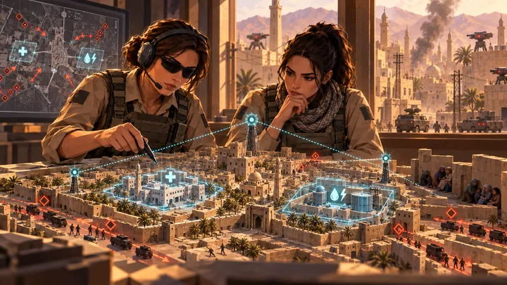
60 operations
Hold a city together over days. Security, trust, infrastructure, intel and enemy influence change with every decision, and the districts remember what you did.
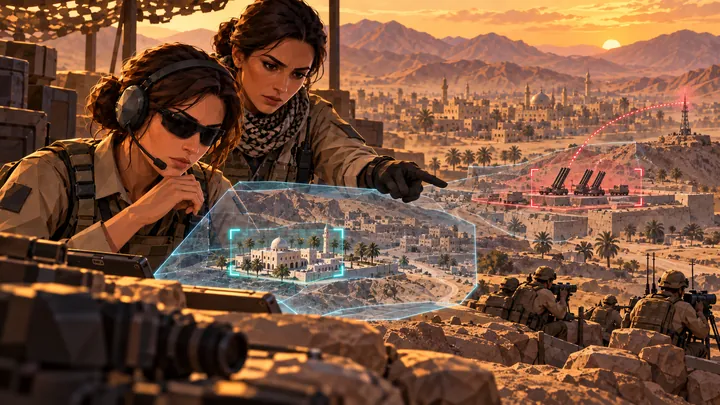
120 scenarios
Fast, replayable battles. Set the difficulty, resources, enemy count and victory condition, then build a base, fuel your army and break the enemy line.
Built for touch
Tap a squad card, choose Move, Attack, Hold or Scan, and watch your orders play out in the streets. Missions are built for mobile sessions of about 6 to 10 minutes.
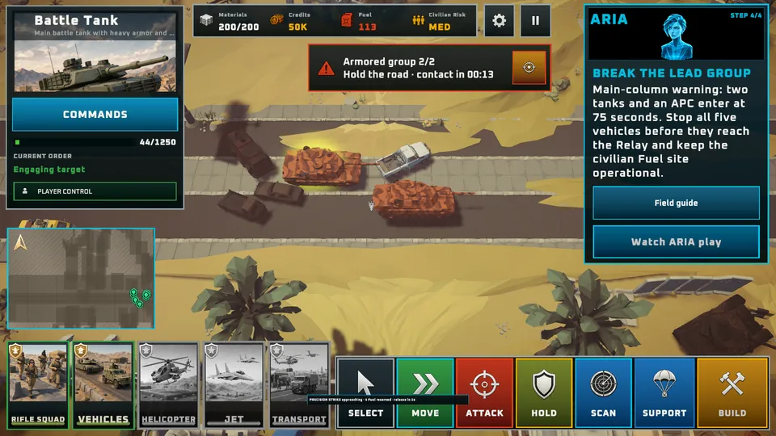
Rifle squads, rocketeers, scout cars, armored carriers, helicopters, transport planes and tanks, all readable on a phone screen.
Place barracks, helipads, guard towers and refineries, then turn territory into reinforcements.
Pump oil, refine it into fuel and protect the convoys that keep vehicles and aircraft moving.
Load troops into helicopters, rescue civilians, parachute behind the line and drop cargo where it's needed.
Radar and intel separate confirmed threats from rumors. Precision is how you win the city's trust.
Markets, clinics, shelters and the families who use them are part of every objective, not background scenery.
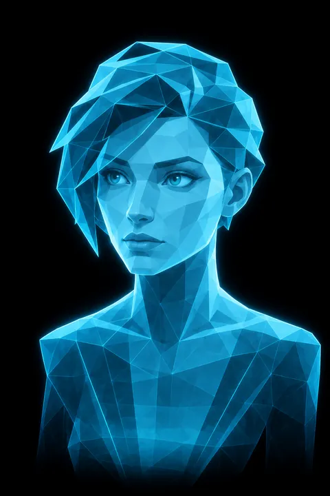
Adaptive Response Intelligence Assistant
ARIA is the last working part of the Civic Relay. She reads the battlefield, flags threats and explains every new system as you meet it. Parts of her memory are missing, and recovering them is at the heart of the story.
“This timing was not inferred. It was authorized.”
The people of Sahrin
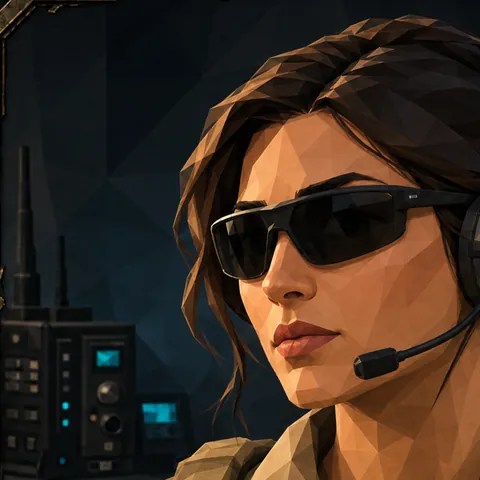
JRC field lead
“They did not just study us. Someone taught them how the city breathes.”
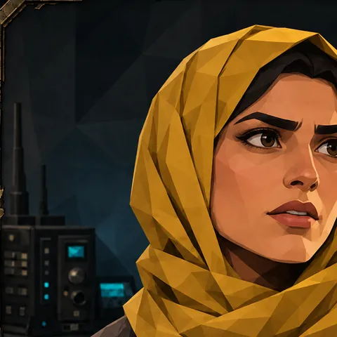
Civil engineer
“They are not only breaking the city. They are deciding what gets repaired.”
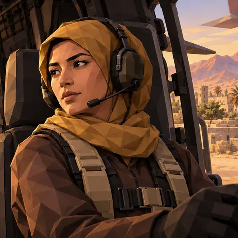
Airlift pilot
“A landing zone isn't safe because a map colors it green.”
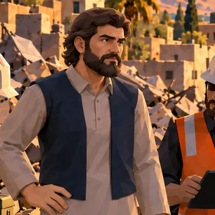
Transit foreman
“Your map was accurate. It just wasn't complete.”
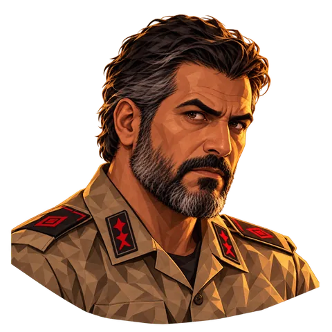
Leader of the Ash Line
“They do not need another committee. They need someone willing to decide.”
Your force: soldiers, pilots, engineers and civil defense defending their own city.
A terrorist network of hidden cells, stolen vehicles and coordinated sabotage.
A deniable proxy army bringing armor, aircraft and long-range launchers.
Play Chapter 1, a Skirmish scenario and the Operations introduction for free. The Campaign Edition includes all 25 story missions, the complete ending and 120 Skirmish scenarios, and Operations is available separately. No ads, no paid currencies and no pay-to-win.
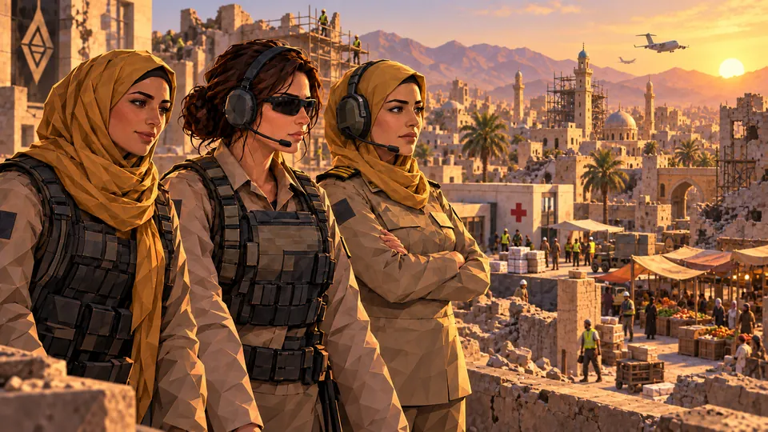
Download Warline Capture for iOS and Android and start your first mission in under a minute.